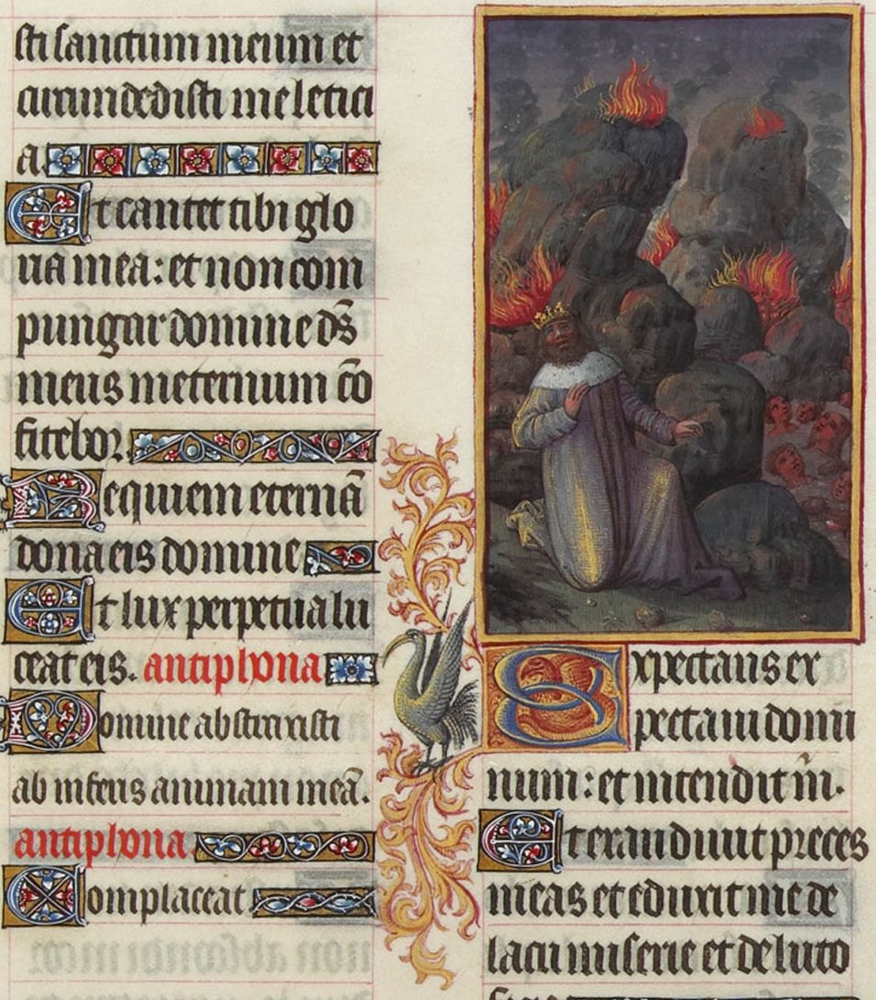

Psalm 40 — The Mister Translation

Psalm 40:2. The page where this psalm begins in the Latin Bible, where it is Psalm 39: the lower right reads Expectans expectavi Dominum, “waiting I waited for the Lord”. The miniature beside it, of a crowned man kneeling among burning rocks, is the illuminator’s own scene; the psalm itself has no fire, only a pit, a rock and a new song.

Translator's Notes — verse by verse
⚠ Numbering. This page follows the Hebrew numbering, in which the heading, lamnatseach ledavid mizmor, “for the director, of David, a psalm”, is verse 1; the verses of the English Bibles on the shelf are therefore one lower from verse 2 on (the waiting is verse 1 in the English). Verse 1 here has no English twin, as with Psalm 51 (now on these pages).
⭐ I waited, I waited. “I waited, I waited for Jehovah” stands in this one verse: the Hebrew doubles the verb, qavoh qiviti, “waiting I waited”, and then “he inclined to me and heard my cry for help” stands in this one verse. The KJV has “I waited patiently for the Lord; and he inclined unto me, and heard my cry”, the NIV “I waited patiently for the Lord; he turned to me and heard my cry”, the NWT 1984 “I earnestly hoped in Jehovah, And so he inclined [his ear] to me and heard my cry for help” and the Douay “With expectation I have waited for the Lord, and he was attentive to me”.
⭐ Out of the pit. “And he brought me up out of the pit of tumult” stands in this one verse (bor, sha’on, a roar or din), and “out of the miry clay” stands in this one verse; then “and he set my feet on a rock” stands in this one verse (sela) and “he made my steps firm” stands in this one verse. The KJV has “He brought me up also out of an horrible pit, out of the miry clay, and set my feet upon a rock, and established my goings”, the NIV “He lifted me out of the slimy pit, out of the mud and mire”, the NWT 1984 “He also proceeded to bring me up out of a roaring pit, Out of the mire of [the] sediment” and the Douay “brought me out of the pit of misery and the mire of dregs”. ⚠ Sha’on is a noise, and the versions have taken it as a roar, a horror or a misery; this translation keeps “tumult”.
⭐ A new song. “And he put a new song in my mouth” stands in this one verse (chadash), “praise to our God”, and the effect is on others: many will see, fear and trust. The KJV has “And he hath put a new song in my mouth, even praise unto our God: many shall see it, and fear, and shall trust in the Lord”, the NIV “He put a new song in my mouth, a hymn of praise to our God”, the NWT 1984 “he put in my mouth a new song, Praise to our God” and the Douay “And he put a new canticle into my mouth, a song to our God”.
⭐ Happy the strong man. “Happy is the strong man who has made Jehovah his trust” stands in this one verse (ashrei), the word that opened Psalm 32 (now on these pages), and the other side of it: “and has not turned to the proud” stands in this one verse (rahav), “and to those who swerve to falsehood” (kazav). The KJV has “Blessed is that man that maketh the Lord his trust, and respecteth not the proud, nor such as turn aside to lies”, the NIV “Blessed is the one who trusts in the Lord” and “who does not look to the proud, to those who turn aside to false gods”, the NWT 1984 “Happy is the able-bodied man that has put Jehovah as his trust And that has not turned his face to defiant people, Nor to those falling away to lies” and the Douay “Blessed is the man whose trust is in the name of the Lord; and who hath not had regard to vanities, and lying follies”. ⚠ Rahavim is read as “the proud” by most, and the same letters are the name of the sea monster Rahab elsewhere; this translation says “the proud”.
⭐ Your wonders and your thoughts. “Many things you have done, Jehovah my God” stands in this one verse, “your wonders and your thoughts” stands in this one verse (pala, machashavah), and then the sentence that reaches its limit: there is none to be set in order beside you, and if I would tell them, they are too many to number. The KJV has “Many, O Lord my God, are thy wonderful works which thou hast done, and thy thoughts which are to us-ward”, the NIV “Many, Lord my God, are the wonders you have done, the things you planned for us”, the NWT 1984 “Many things you yourself have done, O Jehovah my God, even your wonderful works and your thoughts toward us” and the Douay “Thou hast multiplied thy wonderful works, O Lord my God”.
⭐ Sacrifice and offering. “Sacrifice and offering you did not delight in” stands in this one verse (zevach, minchah, chaphets), and “burnt offering and sin offering you did not ask” stands in this one verse (olah): the four kinds of offering go together, and none is asked. It is the same turn as Samuel’s at 1 Samuel 15:22 and the psalmist’s at Psalm 51:18 (both now on these pages).
⚠ Ears you have dug. “Ears you have dug for me” stands in this one verse: the verb is karah, to dig or bore, and the line is read in several ways. The KJV has “mine ears hast thou opened”, the NIV “but my ears you have opened”, the NWT 1984 “These ears of mine you opened up”, the Douay “but thou hast pierced ears for me” and the Geneva “for mine ears hast thou prepared”. The Greek of the Psalms has “a body you prepared for me”, and that is the form quoted at Hebrews 10:5 (now on these pages); the Hebrew has ears. This translation keeps the Hebrew and does not say how a body and ears are related.
⭐ Here I have come. “Then I said: Here I have come” stands in this one verse, “in the scroll of the book it is written of me” stands in this one verse (sefer), and “to do your will, my God, I delighted” stands in this one verse (ratson), the same verb chafatsti, “I delighted”, that was just denied of sacrifice at lo chafatsta. “And your law is within my inward parts” stands in this one verse (torah). The KJV has “Then said I, Lo, I come: in the volume of the book it is written of me” and “I delight to do thy will, O my God: yea, thy law is within my heart”, the NIV “it is written about me in the scroll” and “I desire to do your will, my God; your law is within my heart”, the NWT 1984 “In the roll of the book it being written about me” and “To do your will, O my God, I have delighted, And your law is within my inward parts” and the Douay “Then said I, Behold I come. In the head of the book it is written of me” and “O my God, I have desired it, and thy law in the midst of my heart”. ⚠ The Hebrew does not say whose scroll or which book, nor who is “me”; the verses are quoted in Hebrews 10:5–7, and what the psalm itself gives is a person who says here I have come and delights to do God’s will.
⭐ The glad news of righteousness. “I have told the glad news of righteousness in the great congregation” stands in this one verse (tsedeq, qahal); the words in the great congregation stand in four verses, here, Psalm 22:26 (now on these pages), Psalm 35:18 and Ezekiel 17:17, and in the first three it is a place where praise is spoken. “See, I do not hold back my lips” stands in this one verse, and then Jehovah, you know. The KJV has “I have preached righteousness in the great congregation: lo, I have not refrained my lips, O Lord, thou knowest”, the NIV “I proclaim your saving acts in the great assembly; I do not seal my lips, Lord, as you know”, the NWT 1984 “I have told the good news of righteousness in the big congregation” and the Douay “I have declared thy justice in a great church”.
⭐ Not covered, not hidden. “Your righteousness I have not covered in the midst of my heart” stands in this one verse, the verb kasah of Psalm 32:5 (now on these pages), where the man who would not cover his iniquity is forgiven; here it is the righteousness he will not cover. “Your faithfulness and your salvation I have spoken” stands in this one verse (emunah, teshu’ah). The KJV has “I have not hid thy righteousness within my heart; I have declared thy faithfulness and thy salvation”, the NIV “I do not hide your righteousness in my heart; I speak of your faithfulness and your saving help”, the NWT 1984 “Your righteousness I have not covered over within my heart” and the Douay “I have not hid thy justice within my heart”.
⭐ Steadfast love and truth. “Your steadfast love and your truth” stands in two verses, and both are here, verses 11 and 12 (chesed, emet): the first time as what he has not hidden from the congregation, the second as what will always guard him; and “you will not hold back your compassions from me” stands in this one verse (rachamim), a line that answers verse 10’s I do not hold back with the same verb. The KJV has “I have not concealed thy lovingkindness and thy truth from the great congregation” and “Withhold not thou thy tender mercies from me, O Lord: let thy lovingkindness and thy truth continually preserve me”, the NIV “I do not conceal your love and your faithfulness from the great assembly” and “Do not withhold your mercy from me, Lord; may your love and faithfulness always protect me”, the NWT 1984 “I have not hidden your loving-kindness and your trueness in the big congregation” and “do not restrain your pity from me. Let your loving-kindness and your trueness themselves constantly safeguard me” and the Douay “Withhold not thou, O Lord, thy tender mercies from me: thy mercy and thy truth have always upheld me”. ⚠ The Hebrew of verse 12 can be read as a plea, “do not hold back”, or as a statement, “you will not”; this translation has the statement.
⭐ Evils without number. “For evils … have surrounded me” stands in this one verse, ad ein mispar, “until there is no number”, the same limit as the wonders of verse 6, now of troubles; and “my iniquities have overtaken me” stands in this one verse (avon), so that the evils are partly his own. “And my heart has left me” stands in this one verse. The KJV has “innumerable evils have compassed me about: mine iniquities have taken hold upon me, so that I am not able to look up: they are more than the hairs of mine head: therefore my heart faileth me”, the NIV “For troubles without number surround me; my sins have overtaken me, and I cannot see”, the NWT 1984 “calamities encircled me until there was no numbering of them”, “More errors of mine overtook me than I was able to see” and “my own heart left me” and the Douay “For evils without number have surrounded me; my iniquities have overtaken me, and I was not able to see”. ⚠ The verb for his failure is lo yachalti lir’ot, “I was not able to see”, and the KJV has “look up”.
⭐ The prayer. “Be pleased, Jehovah, to deliver me” stands in this one verse and “Jehovah, make haste to my help” stands in this one verse. The KJV has “Be pleased, O Lord, to deliver me: O Lord, make haste to help me”, the NIV “Be pleased to save me, Lord; come quickly, Lord, to help me”, the NWT 1984 “Be pleased, O Jehovah, to deliver me. O Jehovah, to my assistance do make haste” and the Douay “Be pleased, O Lord, to deliver me, look down, O Lord, to help me”. Verses 14–18 are repeated, with small changes, as Psalm 70, where “God be great” stands in this one verse in place of this psalm’s “Jehovah be great”, and “Jehovah be great” stands in four verses, here, Psalm 35:27, 1 Chronicles 29:25 and Malachi 1:5.
⭐ Let them be ashamed. “Let them be ashamed and confounded together” stands in two verses, here and Psalm 35:26, and “Aha, aha” stands in three verses, here, Psalm 35:21 and Psalm 70 (bosh). The KJV has “Let them be ashamed and confounded together that seek after my soul to destroy it” and “Let them be desolate for a reward of their shame that say unto me, Aha, aha”, the NIV “May all who want to take my life be put to shame and confusion” and “be appalled at their own shame”, the NWT 1984 “May those be ashamed and abashed all together Who are seeking my soul to sweep it away” and “Let those stare in amazement in consequence of their shame” and the Douay “Let them immediately bear their confusion”.
⭐ Seeking you, and poor and needy. “Exult and rejoice in you” stands in two verses, here and Psalm 70; the ones who seek him are the ones who say be great, and the KJV has “Let all those that seek thee rejoice and be glad in thee: let such as love thy salvation say continually, The Lord be magnified”, the NIV “But may all who seek you rejoice and be glad in you”, the NWT 1984 “May Jehovah be magnified” and the Douay “Let all that seek thee rejoice and be glad in thee: and let such as love thy salvation say always: The Lord be magnified”. The close is the poorest line in the psalm: “And I am poor and needy” stands in two verses, here and Psalm 70 (oni, evyon), and “the Lord thinks of me” stands in this one verse (chashav), the verb of reckoning in Psalm 32:2: the man whom Jehovah does not count iniquity against is counted by the Lord. “You are my help and my deliverer” stands in this one verse, and the last words, my God, do not delay, go back to the waiting of verse 2. The KJV has “But I am poor and needy; yet the Lord thinketh upon me: thou art my help and my deliverer; make no tarrying, O my God”, the NIV “But as for me, I am poor and needy; may the Lord think of me”, the NWT 1984 “But I am afflicted and poor. Jehovah himself takes account of me” and the Douay “But I am a beggar and poor: the Lord is careful for me”. The Name stands in this psalm nine times, in verses 2, 4, 5, 6, 10, 12, 14 (twice) and 17, and at the end it is Adonai, “the Lord”, who thinks of him.
Patterns worth carrying forward
Where this translation keeps the words exact and distinct: “steadfast love” for chesed and “truth” for emet in verses 11 and 12; “compassions” for rachamim at verse 12; “covered” for kasah at verse 11, as in Psalm 32; “hold back” for kala at verses 10 and 12; “iniquities” for avonot at verse 13; “delighted” for chafets at verses 7 and 9; “Jehovah” for the Name, written nine times in verses 2, 4, 5, 6, 10, 12, 14 (twice) and 17.
Echoes paid. Psalm 51:1 and 51:18; Psalm 32:1, 32:2 and 32:5; 1 Samuel 15:22; Psalm 22:26; Hebrews 10:5–7.
Echoes planted. Psalm 70; Psalm 35:18, 35:21, 35:26 and 35:27; Ezekiel 17:17; 1 Chronicles 29:25; Malachi 1:5. None of these is translated here yet.
⚠ A note on order: Psalms stands on these pages at chapters 1, 2, 8, 18, 19, 22, 23, 24, 25, 27, 32, 34, 37, 40, 42, 46, 51, 56, 62, 63, 90, 91, 100, 103, 118, 119, 121, 130, 138, 139, 145 and 150, chosen by how often a passage is read rather than in sequence. The sequential thread is unchanged: next in sequence is Psalm 3.